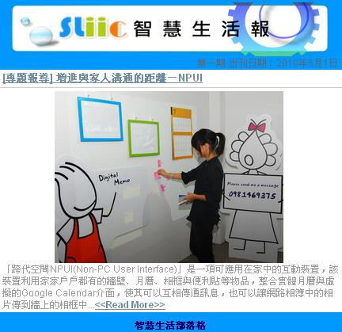

科技與生活的對話—智慧生活科技電子報開張！
建立日期 2010-05-10 00:11 最近更新在 2010-05-11 00:46
作者是 智慧生活
為了讓社會大眾瞭解目前國科會最新研發成果，並促成業界團體對於國科會各項應用的合作機會，『智慧生活科技區域整合中心』整合多項國科會計畫的應用，結合以開放式商業模式 (Open Business Model) 推動開放式創新 (Open Innovation)，希望能真正開啟跨領域與產官學研的對話，形成一個創新價值迴路。而這些創新價值，從 2010 年 5 月開始，透過『智慧生活科技電子報』的發送，將智慧生活的種子發散到社會每一個角落。邀請您進入
智慧生活科技部落格，註冊訂閱電子報，您就能定期收到各類創新報導以及最新科技趨勢！
